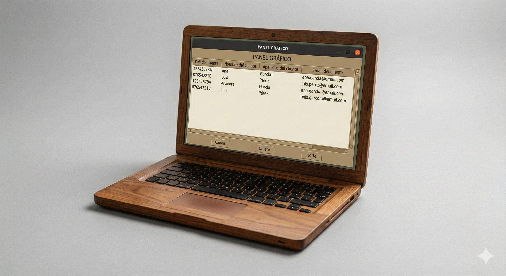

Mis Proyectos

ENTRENAMIENTO DE DRAGONES
Simulación de estrategia donde dos dragones entrenan. Uso de lógica condicional avanzada.
Ver DemoAGENDA CRUD
Gestión de clientes en consola usando SQLite. Permite crear, listar, actualizar y borrar registros de forma optimizada.
Ver Demo
PANEL GRÁFICO
Interfaz moderna con Tkinter conectada a MySQL. Visualización de datos en tiempo real con diseño intuitivo.
Ver Demo